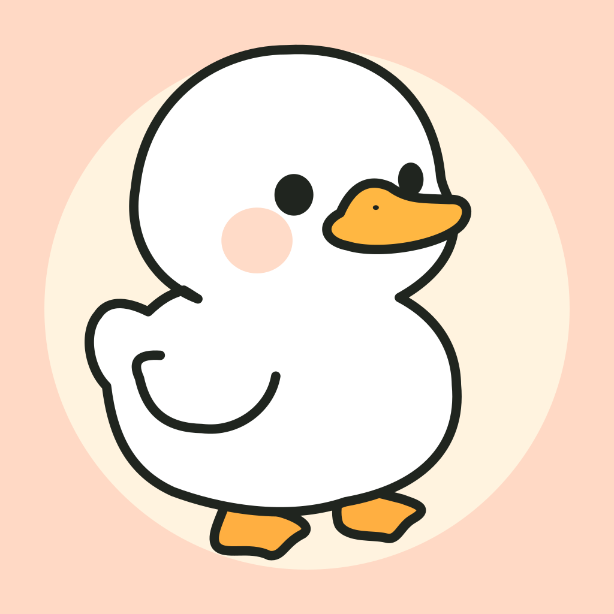

QueueDuckyQueueDucky support
A little help
for your next step.
Questions, feedback or a problem with QueueDucky? Contact the developer and tell us what happened.
What to include
Please include your iPhone model, iOS version, QueueDucky version, and the steps that led to the issue. If a question seems incorrect, include its prompt or a screenshot. Do not include passwords or other sensitive information.
Getting started
Complete the welcome screens and choose a daily goal of 3, 5 or 8 correct answers. Tap Go on Home to practice. Swipe, use the arrows, or tap an answer indicator to choose an answer, then tap Check my answer.
Tap an underlined term for a definition and example. For scenario questions, tap the title at the top to read the background and assumptions.
Questions and categories
The current version includes 452 questions: 449 in System Design and 3 in Databases. New installs start with System Design. Use the category control at the top right of Home to select one or both categories. At least one must remain selected.
The interface, questions and explanations are in English. The app requires iOS 17 or later and works offline without an account.
Progress and daily goals
A new correct answer adds color to Ducky, up to your daily goal. Reviewing the same correct answer again does not earn extra color that day. Daily counters reset at local midnight.
Tap the progress avatar on Home to open Daily Learning and view Today or History. Progress is stored on your device; there is no account or cloud sync. Deleting the app can remove your progress.
Adding the Home Screen widget
Open QueueDucky once. On your iPhone Home Screen, touch and hold an empty area, open the widget picker, and search for QueueDucky. Choose a medium or large widget.
Tapping the widget opens the question it displays. A completed goal may show a completion message. iOS controls widget refresh timing, so changes may not appear immediately. Try opening QueueDucky again if the widget looks out of date.
Privacy and software notices
QueueDucky stores learning information locally and does not use ads or analytics. Read the privacy policy for details, including how support email is handled.